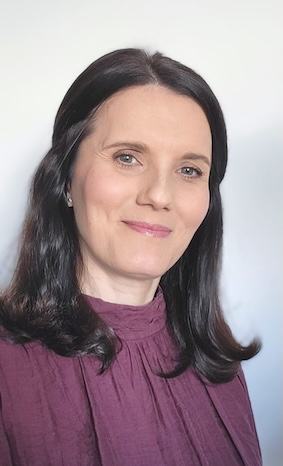

Psihoterapeut specialist cu Drept de liberă
practică acreditat de Colegiul Psihologilor
din România
Formare în Terapie cognitiv- comportamentală și hipnoterapie
Formare în Terapia Schemelor
Formare în Consilierea cuplurilor și psihosexologie
Consilier dezvoltare personală
Formare în Terapie cognitiv- comportamentală și hipnoterapie
Formare în Terapia Schemelor
Formare în Consilierea cuplurilor și psihosexologie
Consilier dezvoltare personală
Eu sunt Simina și am ales să pășesc pe un drum care îmi permite să înțeleg experiențele pe care le-am trăit și pe care le trăiesc în continuare, chiar dacă este presărat cu provocări, poticniri și efort constant.
Cred mult în răbdare, bunătate și compasiune, manifestate, în primul rând, față de propria persoană, pentru ca apoi să putem să le reflectăm asupra celor din jurul nostru. De asemenea, consider că aceste valori există în fiecare dintre noi, așteptând uneori să fie descoperite, alteori doar activate, iar purtându-le și trăindu-le zi de zi, viața se poate schimba într-o direcție mai bună. Este vorba de un proces de învățare, care este unic, pentru fiecare dintre noi venind cu încercări personale și descoperiri care au nevoie să-și găsească locul potrivit în sufletul și mintea noastră.
Atât personal, cât și profesional, îmi petrec mult timp ascultând cu drag poveștile oamenilor, fiind motivată să înțeleg și să rezonez cu acestea. Prinși în agitația de zi cu zi, uităm cât de important este sa împărtășim trăiri, nevoi, dorințe, vise, nemulțumiri, frici, să le rostim cu voce tare și să le auzim cum sună cu adevărat. Am descoperit că toate acestea prind o altă formă și primesc o altă semnificație atunci când sunt spuse, discutate și înțelese.
Dalai Lama spunea “Fii bun ori de câte ori se poate…și întotdeauna se poate.”, iar eu doar aș adăuga, gândindu-mă la fiecare dintre noi, fii bun cu tine de câte ori se poate…și întotdeauna se poate.
Nu am fost de la început psihoterapeut, deși cred că mi-am dorit dintotdeauna să o iau pe acest drum profesional. Am poposit în cercetarea de piață, timp de 19 ani, perioadă în care am fost printre oameni, dându-mi toată silința să-i cunosc, să le înțeleg nevoile, motivațiile, așteptările și dorințele. M-am bucurat de întreaga experiență, fiind o călătorie frumoasă, care m-a ajutat să mă dezvolt și să-mi descopăr resursele, să mă împrietenesc cu anxietatea mea de toate zilele și să învăț să conviețuim.
Mai apoi, am decis să mă îndrept spre o aventură care azi mă umple de satisfacție, mă provoacă și mă ajută să învăț zilnic cu și despre oameni. Le mulțumesc tuturor celor care își adună curajul de a păși în cabinete de psihoterapie, de a împărtăși cu sinceritate ce nu funcționează, iar apoi, trag aer în piept și încep procesul de schimbare. E o onoare și un privilegiu să ai un loc în rândul din față, pentru a asista la o asemenea experiență.
Am ales să mă formez în cadrul terapiei cognitiv-comportamentale, care se pliază pe o parte din trăsăturile mele, și anume disciplină, organizare, spirit investigativ și pragmatism. Am completat, apoi, această formare cu terapia schemelor, care mă ajută ca, împreună cu clienții, să înțelegem tiparele comportamentale și atitudinale, și astfel, să construim o strategie pentru schimbare, durabilă pe termen lung. Sunt constant deschisă în a adopta instrumente din mai multe tipuri de terapie pentru a putea adapta munca din cabinet la fiecare client în parte.
Ritmul în care se derulează tot procesul este și el unic, specific fiecăruia dintre noi. Poate cea mai dificilă etapă dintre toate este să luăm decizia de a apela la cineva și să acționăm în a găsi această persoană. E în ordine să existe ezitări, e important ca ele să se manifeste. Ajută să avem încredere că vom alege momentul cel mai potrivit pentru a face acest pas.
Să fim buni!
Cred mult în răbdare, bunătate și compasiune, manifestate, în primul rând, față de propria persoană, pentru ca apoi să putem să le reflectăm asupra celor din jurul nostru. De asemenea, consider că aceste valori există în fiecare dintre noi, așteptând uneori să fie descoperite, alteori doar activate, iar purtându-le și trăindu-le zi de zi, viața se poate schimba într-o direcție mai bună. Este vorba de un proces de învățare, care este unic, pentru fiecare dintre noi venind cu încercări personale și descoperiri care au nevoie să-și găsească locul potrivit în sufletul și mintea noastră.
Atât personal, cât și profesional, îmi petrec mult timp ascultând cu drag poveștile oamenilor, fiind motivată să înțeleg și să rezonez cu acestea. Prinși în agitația de zi cu zi, uităm cât de important este sa împărtășim trăiri, nevoi, dorințe, vise, nemulțumiri, frici, să le rostim cu voce tare și să le auzim cum sună cu adevărat. Am descoperit că toate acestea prind o altă formă și primesc o altă semnificație atunci când sunt spuse, discutate și înțelese.
Dalai Lama spunea “Fii bun ori de câte ori se poate…și întotdeauna se poate.”, iar eu doar aș adăuga, gândindu-mă la fiecare dintre noi, fii bun cu tine de câte ori se poate…și întotdeauna se poate.
Nu am fost de la început psihoterapeut, deși cred că mi-am dorit dintotdeauna să o iau pe acest drum profesional. Am poposit în cercetarea de piață, timp de 19 ani, perioadă în care am fost printre oameni, dându-mi toată silința să-i cunosc, să le înțeleg nevoile, motivațiile, așteptările și dorințele. M-am bucurat de întreaga experiență, fiind o călătorie frumoasă, care m-a ajutat să mă dezvolt și să-mi descopăr resursele, să mă împrietenesc cu anxietatea mea de toate zilele și să învăț să conviețuim.
Mai apoi, am decis să mă îndrept spre o aventură care azi mă umple de satisfacție, mă provoacă și mă ajută să învăț zilnic cu și despre oameni. Le mulțumesc tuturor celor care își adună curajul de a păși în cabinete de psihoterapie, de a împărtăși cu sinceritate ce nu funcționează, iar apoi, trag aer în piept și încep procesul de schimbare. E o onoare și un privilegiu să ai un loc în rândul din față, pentru a asista la o asemenea experiență.
Am ales să mă formez în cadrul terapiei cognitiv-comportamentale, care se pliază pe o parte din trăsăturile mele, și anume disciplină, organizare, spirit investigativ și pragmatism. Am completat, apoi, această formare cu terapia schemelor, care mă ajută ca, împreună cu clienții, să înțelegem tiparele comportamentale și atitudinale, și astfel, să construim o strategie pentru schimbare, durabilă pe termen lung. Sunt constant deschisă în a adopta instrumente din mai multe tipuri de terapie pentru a putea adapta munca din cabinet la fiecare client în parte.
Ritmul în care se derulează tot procesul este și el unic, specific fiecăruia dintre noi. Poate cea mai dificilă etapă dintre toate este să luăm decizia de a apela la cineva și să acționăm în a găsi această persoană. E în ordine să existe ezitări, e important ca ele să se manifeste. Ajută să avem încredere că vom alege momentul cel mai potrivit pentru a face acest pas.
Să fim buni!